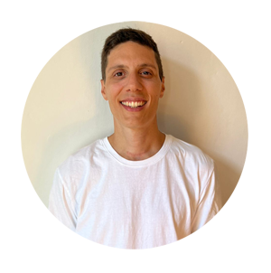

CV Santiago Gutierrez Donadio
Hello, I'm Santiago
'88
Degree in Human Resources with a lot of experience in the area and in the management of interpersonal relationships.
Proactive, tenacious, and always predisposed to learn.
I´m Currently looking for new experiences to develop me in this area.
Work Experience
Telearte S.A. (TV Channel)
02/2018 - 02/2022
Human Resources Analyst: Payroll/Actors law, Personal Administration. Personal Recruitment and other soft area tasks. Staff: 900 employees. RHPRO (Visma) Administration System
Prestigio S.A.
07/2015 - 01/2018
Human Resources Analyst: Personal Recruitment and Payroll complete process, Job Syndicates, ART (job risk secure) and healthcare system. Personal Recruitment, Performance Evaluations, and other soft area tasks. Staff: 450 employees. Neuralsoft Administration System
Comdata Arg. S.A
04/2015 - 06/2015
Ssr. Personal Administration Analyst: Personal Administration and Payroll Supervision. Staff: 1100 employees. Bejerman Administration System
Crowe Horwath S.A.
05/2013 - 12/2015
Payroll Analyst: Payroll, Job Syndicates, ART, and Healthcare system. In charge of 3 clients, with a staff of 350 employees. RHPRO (Visma) Administration System
Education
UCES (University of Business and Social Sciences)
2015 Degree in Administration of Human Resources - Graduate
2012 University Technician in Administration of Human Resources - Graduate
Certificates
Payroll Seminar - UBA Capacitarte
Personal Recruitment Program - UBA Capacitarte
100 Days of Code: The Complete Python Pro Bootcamp for 2022 - UDEMY
2022 Complete Python Bootcamp from Zero to Hero in Python - UDEMY
Languages
Spanish ⭐⭐⭐⭐⭐
English ⭐⭐⭐⭐
Italian ⭐⭐
Skills
Windows OS ⭐⭐⭐⭐
Microsoft Office Suite ⭐⭐⭐⭐
Adobe Photoshop ⭐⭐⭐
Python ⭐⭐⭐
HTML/CSS ⭐⭐
Get In Touch
Contact Me© 2022 Santiago Gutierrez Donadio.